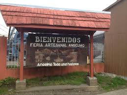
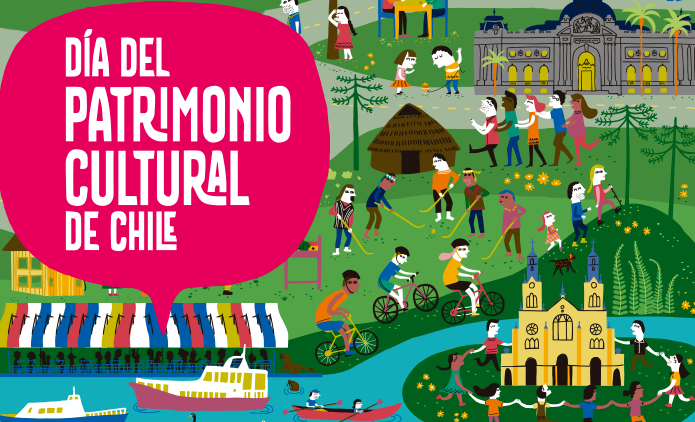
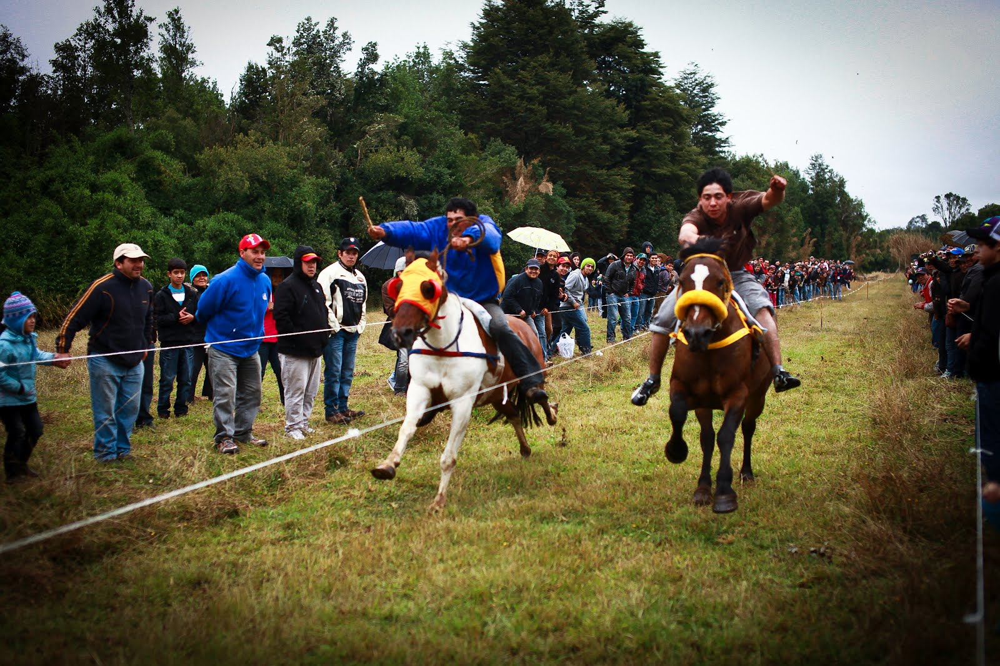

Fiestas Costumbristas
En su treinta aniversario, la Ruta de las Tradiciones se realizar en veinticinco localidades urbanas y rurales de la comuna de Puerto Montt, sumando 120 locales de comidas, 1.500 personas trabajando y 150 artesanos ofreciendo sus productos. Este circuito de fiestas costumbristas comienza el fin de semana del 4 y 5 de enero en el Parque La Paloma.



